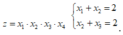
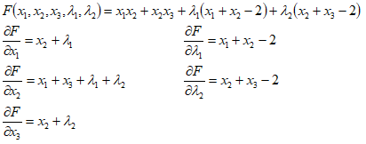
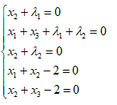
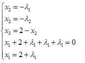
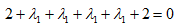
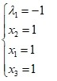
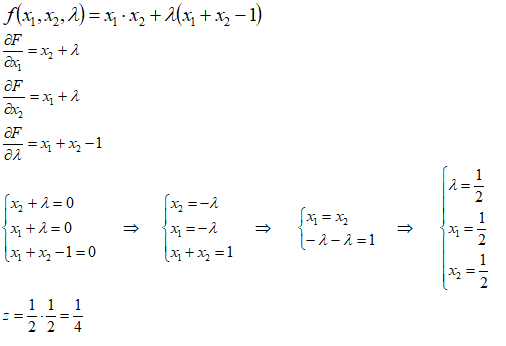
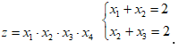

Решение задач нелинейного программирования графическим методом и
методом множителей Лагранжа
1.1 Научиться решать задачи нелинейного программирования, используя метод множителей Лагранжа и графический метод.
2 Литература:
2.1 Гетманчук А. В. Экономико-математические методы и модели : учеб. пособие для бакалавров / А. В. Гетманчук, М. М. Ермилов. - М. : Издательско-торговая корпорация «Дашков и Ко», 2015. - 188 с. - Электронное издание. - Режим доступа: http://ibooks.ru.
3 Теоретические сведения:
Рассмотрим решение задачи поиска минимума функции f(x) при ограничениях вида bi - φi (x1,…xn) = 0.
Предполагая, что f(x1,…xn) и φ (x1,…xn) непрерывны вместе со своими производными. Для решения задачи вводят набор переменных - множителей Лагранжа - λ1,…λn и формируют функцию Лагранжа:
Необходимые условия экстремума функции Лагранжа образую систему (n+m) уравнений:
Алгоритм решения задачи методом множителей Лагранжа:
1) составить функцию Лагранжа;
2) найти частные производные функции Лагранжа по ее аргументам;
3) решить систему (n+m) уравнений, найти критические точки (в которых целевая функция может иметь экстремум);
4) среди критических точек определить точки, доставляющие минимум целевой функции и вычислить значения функции f(x1,…xn) в этих точках;
5) определить точку глобального минимума.
Образец выполнения задания:
Задача 1:
Найти точку условного экстремума функции: 
Решение:






Задача 2:
Найти max значение функции: z=x1*x2 с ограничением: x1+x2=1
Решение:

4 Задание:
4.1 Найти точку условного экстремума функции: 
4.2 Найти максимальное значение функции: z=x1*x2 с ограничением: x1+x2=1 .
4.3 Найти минимальное значение функции: z=2x1*x2^2 + x2^2 при ограничениях: 2x1+4x2=8, x1,2>=0.
5 Содержание отчета:
5.1 Наименование и цель работы.
5.2 Выполненное задание.
6 Контрольные вопросы:
6.1 Какие методы получения оптимизационных решений относят к нелинейным методам?
6.2 Запишите задачу нелинейного программирования в общем виде.
6.3 С какими трудностями приходится сталкиваться при решении задач нелинейного программирования?
6.4 Какие методы решения задач нелинейного программирования могут быть использованы?
6.5 В чем состоит суть метода множителей Лагранжа?